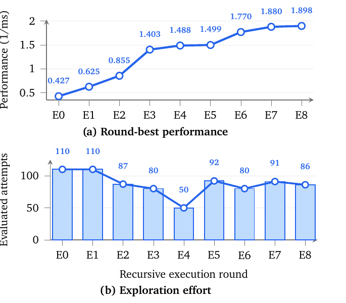

El próximo experimento también es una decisión.
Ejecutar una idea a la perfección no garantiza que merezca probarse. En la investigación con IA, decidir dónde insistir, explorar alternativas o detenerse puede importar tanto como escribir un buen programa.
Imagina un mapa de intentos
Cada experimento deja un camino y un resultado. Quienes investiguen después pueden recorrer ese mapa, comparar decisiones y aprovechar lo que ya se midió. La analogía ayuda a entender el método, pero el mapa real está formado por registros estructurados de ejecuciones.
Lo que mejora es la estrategia
Una política de exploración es la regla que decide cómo distribuir los intentos. En Dream-RSI, esa política es código modificable. El agente de programación y el evaluador permanecen fijos durante la comparación controlada.
Una vuelta crea el mapa de la siguiente.
El proceso alterna trabajo real y evaluación sobre registros. Las dos fases cumplen funciones distintas.
Explorar y registrar
La política actual guía al agente. Se crean y evalúan programas; los intentos, las relaciones y los resultados forman un árbol. Esta fase consume ejecuciones reales.
Convertir el historial en replay
El árbol se convierte en un entorno consultable. Una política puede visitar las ramas en otro orden y decidir cuándo detenerse, usando los resultados existentes.
Comparar políticas candidatas
Un agente desarrolla variantes del código de exploración. El replay ofrece retroalimentación a elegir una política que equilibre calidad, trabajo y paralelismo.
Volver a investigar y ampliar el historial
La política seleccionada guía la siguiente ronda. Las nuevas ejecuciones añaden árboles al conjunto de simuladores. La mejora de la estrategia y la expansión del historial cierran el ciclo.
Observa el mecanismo en las figuras de los autores.
Imágenes descargadas del sitio original y conservadas, con explicaciones en portugués. Haz clic en una figura a abrirla a tamaño completo.


Qué se midió y frente a quién.
El artículo evalúa ocho tareas en tres dominios. No existe una única métrica: el tiempo de ejecución, las llamadas al agente y la calidad de la solución responden a preguntas distintas.
| Política / modelo | Llamadas de descubrimiento | Tiempo medio final (ms) |
|---|---|---|
| Fija · Gemini-3.1-Pro | 550 | 3.587,1 |
| Dream-RSI · Gemini-3.1-Pro | 317 | 2.931,0 |
| Fija · Gemini-3.7-Flash | 3.200 | 2.516,7 |
| Dream-RSI · Gemini-3.7-Flash | 1.879 | 2.350,6 |
El tiempo medio reúne seis conjuntos de prueba. «Compute» en esta tabla significa el número acumulado de llamadas, no dólares, energía ni el tiempo total de toda la investigación. Los nombres de los modelos se mantienen tal como los publicaron los autores. Artículo, sección 4.1 ↗
Compara en igualdad de condiciones.
Visualización de las cifras publicadas. No ejecuta IA ni estima una factura.
Tiempo medio final: de 3.587,1 a 2.931,0 ms.
La cifra de 162× requiere contexto
Compara 51.200 llamadas de SimpleTES con 317 de Dream-RSI en Lasso. Las bases usan modelos distintos; no es una comparación controlada que cambie únicamente la política. No tomes este factor como una promesa general de ahorro.
También hay resultados sin victoria
En matemáticas, Dream-RSI mejora el resultado de suma–diferencia y empata en empaquetamiento de círculos entre los métodos enumerados. En autocorrelación, SimpleTES conserva el mejor valor; Dream-RSI usa un presupuesto menor de generaciones.


Entender también implica saber dónde termina la idea.
El replay no ve el futuro.
Responde sobre el espacio ya recorrido. Una rama que nunca se ejecutó no obtiene un resultado fiable solo porque exista una simulación. Por eso siguen siendo necesarias nuevas rondas reales.
Cero ejecuciones nuevas no significa costo total cero.
Fue necesario producir el historial. Crear y revisar políticas, almacenar registros y ejecutar el replay también requieren recursos. El ahorro publicado en llamadas de descubrimiento no refleja el costo total.
Una política mejor en el historial puede fallar fuera de él.
Incluir la política actual entre las candidatas permite elegir una que no reduzca la puntuación en ese replay. Esto no garantiza el mismo resultado en tareas nuevas. El plan educativo separa los árboles de desarrollo y de prueba a hacer visible este riesgo.
El agente no puede consultar la respuesta antes de decidir.
El apéndice B limita la política al prefijo observado: solo los nodos ya revelados pueden guiar la siguiente decisión. Elegir ramas mirando resultados ocultos filtraría información e invalidaría la comparación.
«Menos orientación fue mejor» tiene un alcance concreto.
La ablación del estudio prueba una forma específica de añadir resúmenes direccionales de trayectorias a los prompts. Este mecanismo perjudicó el resultado en las condiciones evaluadas. No demuestra que toda instrucción, memoria u orientación sea perjudicial.
La historia de la IA es una analogía, no el conjunto de datos de este estudio.
Hinton, las GPU, Transformers, AlphaGo y AlphaFold ayudan a hablar de las dependencias entre descubrimientos. El Dream-RSI presentado utiliza árboles registrados en tareas de descubrimiento; no simula toda la historia de la ciencia ni demuestra redescubrir el futuro a partir de un corte histórico del conocimiento.
Dónde encaja AlphaEvolve en esta historia.
AlphaEvolve combina modelos de lenguaje y evaluación automática en un proceso evolutivo de programas. Dream-RSI se centra en mejorar la política que organiza la exploración. Ambos participan en la investigación automatizada, pero sus mecanismos y resultados deben presentarse por separado.
DeepMind informa que una heurística descubierta por AlphaEvolve para Borg recupera, en promedio, 0,7% de los recursos computacionales globales de Google. La fuente no convierte este resultado en «millones de dólares»; esa estimación del narrador no se presentará como un hecho.
Una pregunta a comprobar tu comprensión.
Una política obtuvo mejores resultados en todos los árboles históricos disponibles. ¿Qué podemos concluir?
Elige una respuesta a ver la explicación.
Un proyecto a aprender a evaluar descubrimientos.
Propuesta: un laboratorio educativo en portugués que comienza con lectura visual y avanza hacia experimentos de decisión. La guía y la actividad anteriores ya están disponibles; las etapas siguientes forman el plan de expansión.
Ve a la fuente. Comprueba los detalles.
Las referencias primarias respaldan las afirmaciones. El video es el punto de partida editorial; la imagen adjunta no se usa como evidencia científica.
- Sitio original de Dream-RSIPresentación del método, demostración y origen de las cinco figuras de esta página.
- Zheng et al. — Dream-RSI: Recursive Self-Improvement through Evolving WorldsarXiv:2609.14858v1 · 14 de septiembre de 2026. Método, tablas, ablaciones y prompts.
- Repositorio de los autoresEstado del código, instrucciones de cita y plan de publicación.
- AlphaEvolve — Google DeepMindFuente del resultado del 0,7 % en la gestión de recursos computacionales.
- Video: «Google ha vuelto...»Origen del resumen proporcionado a este proyecto; análisis basado en el texto recibido y su comparación con las fuentes primarias.
Figuras: Zheng et al. / Dream-RSI, conservadas sin traducción superpuesta. Los créditos y las URL de origen están en registro de imágenes. Los derechos pertenecen a sus respectivos titulares. Los comentarios y las actividades son contenido educativo de INEMA.